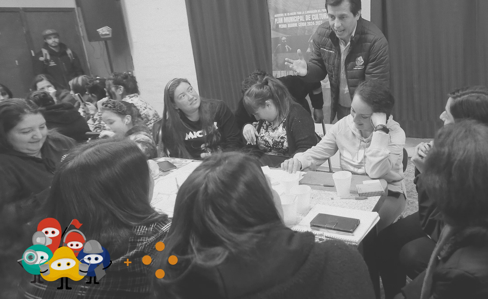
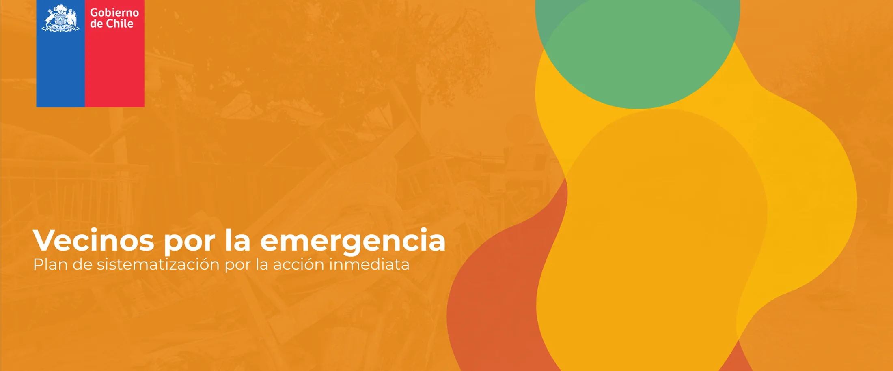
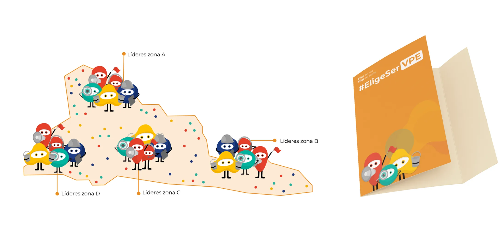
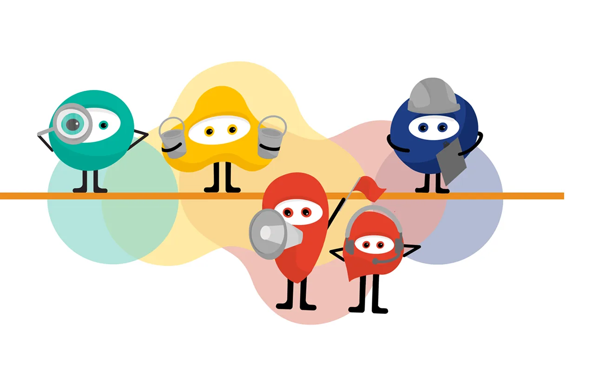

VPE
A neighbourhood plan that synchronises community action with the official disaster response.
2024
Taller V, Diseño UC
Balloon Latam · Licantén
4 designers
Horizontal teamwork across every stage of the project

Coordination, not goodwill, was missing
In Licantén, aid from SENAPRED, the national disaster agency, and from neighbourhood organisations arrives separately and loses effectiveness. VPE introduces emergency representatives, residents selected and notified by SENAPRED, who co-design an action plan for each role and carry it out at every stage.



Field visit to Licantén, with Balloon Latam as the counterpart that framed the challenge
Highest grade in Taller V
The solution already existed in the community. Design had to give it a structure the institution could recognise.